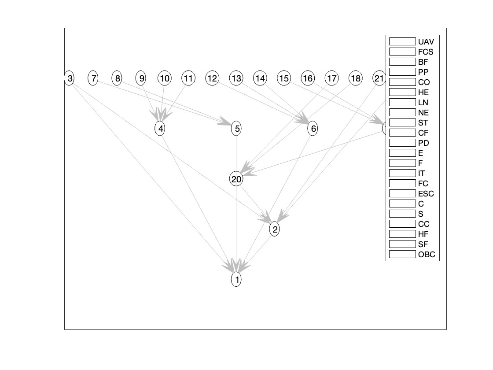

Fuzzy Bayesian Network "Risk Analysis" on UAV Missions

Overview
- Engineered a Fault Tree Analysis and constructed a comprehensive Bayesian network to calculate the potential hazards in unmanned aerial vehicle (UAV) missions.
- Utilized the Bayesian Network Toolbox in MATLAB to accurately calculate the probability of potential hazards.